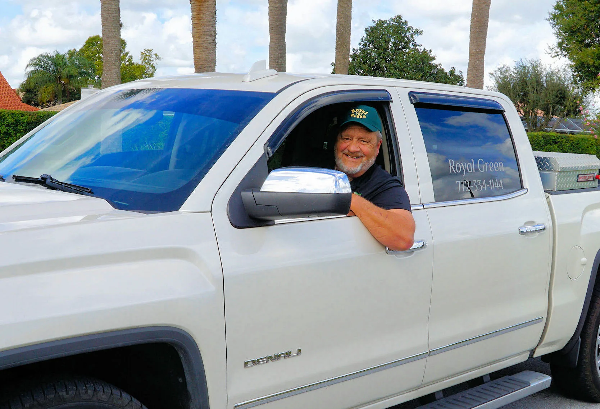
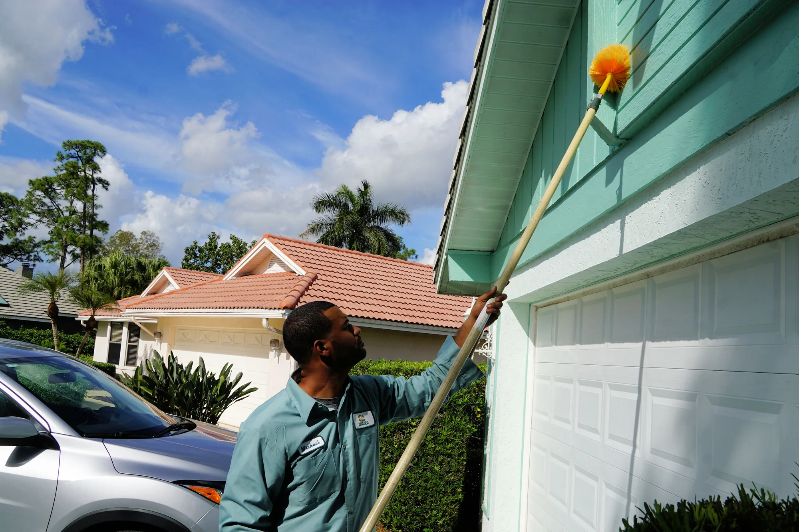

Green Industries Best Management Practices
Our employees hold Green Industries Best Management Practices certifications, supporting responsible fertilization and landscape care.
Experienced care. Healthier landscapes. Professional lawn, landscape, and pest management rooted in local knowledge.
Founded in 1996, Royal Green Landscape & Pest Management, Inc. has built a reputation for professional lawn care, landscape treatments, and pest management throughout the Treasure Coast.
With decades of experience serving homeowners, residential communities, and commercial properties, our team understands the unique challenges of maintaining healthy lawns and landscapes in South Florida. From turf fertilization and weed control to tree and shrub care, disease management, and interior pest control, we bring industry knowledge and a commitment to quality service to every property.
Request a Free Estimate

Our mission is to provide reliable, science-based lawn, landscape, and pest management solutions that promote healthier properties and lasting customer relationships.
Through professional expertise, customized treatment programs, and proactive communication, we strive to deliver the quality care and service our customers deserve.
Royal Green is committed to professional standards through industry training, certifications, and specialized horticultural knowledge.
Our employees hold Green Industries Best Management Practices certifications, supporting responsible fertilization and landscape care.
Our team holds the required Florida Department of Agriculture and Consumer Services fertilizer credentials.
ISA Certified Arborist expertise supports professional guidance on tree health, plant care, and landscape management.
FNGLA horticulture and University of Florida palm management training strengthen our knowledge of South Florida plant health.
David Harper leads Royal Green with a focus on professional expertise, quality service, and long-term customer relationships. Under his leadership, Royal Green has grown from a small local business into an established lawn, landscape, and pest management company serving homeowners, property managers, and residential communities throughout Martin and St. Lucie counties.
His approach emphasizes science-based treatment programs, knowledgeable technicians, and proactive communication to help customers maintain healthier properties.

David Harper
Owner & CEO
Diane Frazier, LCAMPresident, Secure Property Management
“I have been very impressed with their staff’s knowledge, science-based program, and the results.”
Marvin OttPresident, St. James Golf Club HOA
“The lawns and shrubs have never looked as good as they do now.”
Gail Logan, LCAMDirector of Operations, Pinnacle Association Management
“Communication is not lacking, nor is education.”
Let our experienced team help care for your lawn, landscape, and property.